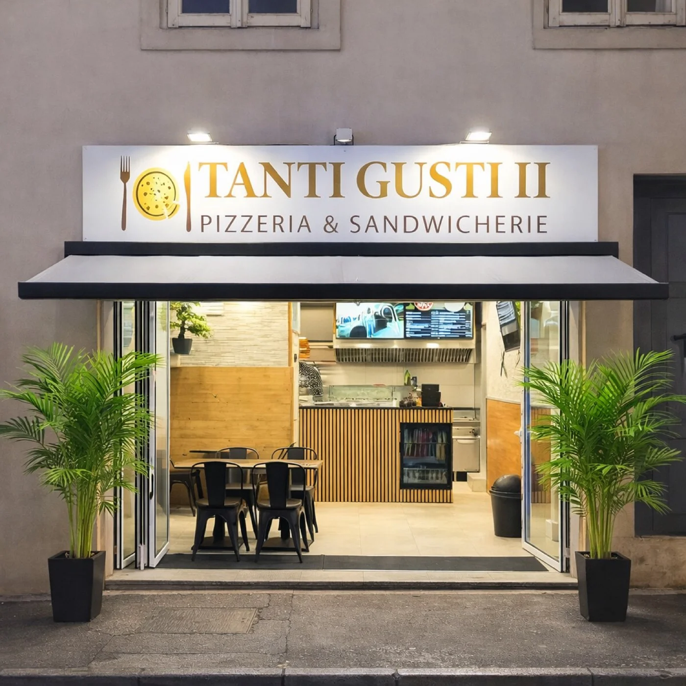
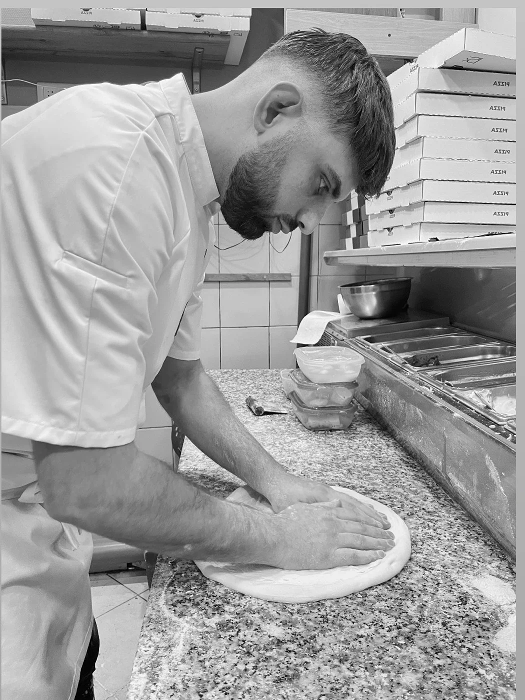
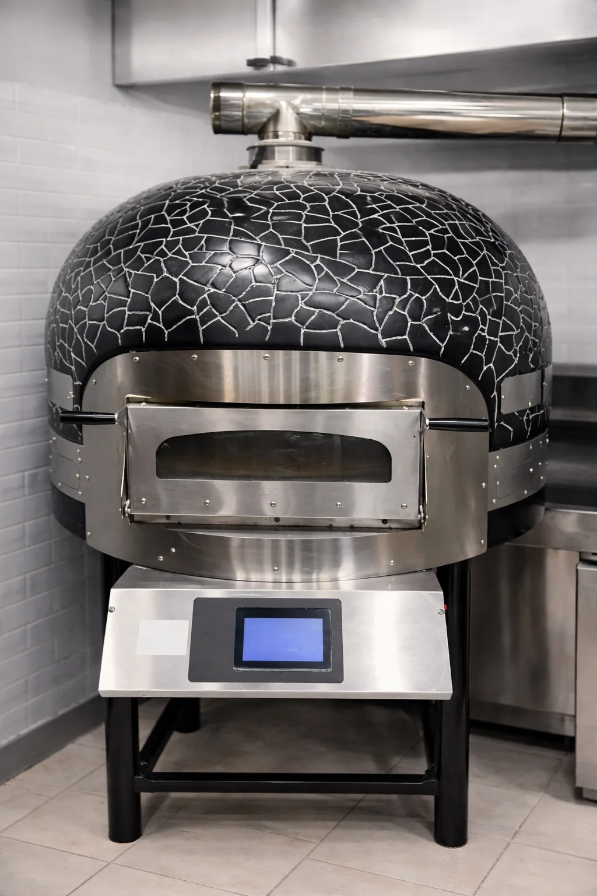

TANTI
GUSTI II
Pizzas artisanales, sandwichs généreux et saveurs gourmandes préparés avec soin, tous les soirs jusqu'à 2h du matin.


Une adresse gourmande
au cœur de Nancy
TANTI GUSTI II vous invite à une expérience authentique où la tradition rencontre la gourmandise. Au cœur de notre cuisine, notre véritable four Napolitain sublime nos pizzas artisanales, leur offrant une cuisson de caractère et des saveurs inégalées. Découvrez une carte généreuse, des pizzas, sandwichs signature et des chaussons gratinés, préparés chaque jour avec passion et des produits frais.
Base tomate ou crème, garnitures généreuses, pâte maison.
Steak frais, ingrédients de qualité, recettes originales.
Midi et soir, 7 jours sur 7 selon les horaires.
Une carte pensée
avec soin
Nos horaires
18:30 – 02:00
18:30 – 02:00
18:30 – 02:00
18:30 – 02:00
18:30 – 02:00
Nous trouver
Adresse
3 Rue de Bonsecours54000 Nancy
Téléphone
03 72 91 78 80TikTok
@tantigusti2